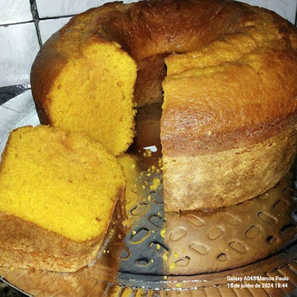
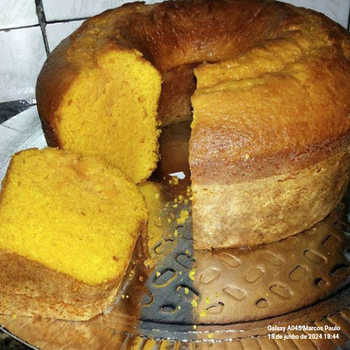

Preparação da abóbora: Descasque e rale a abóbora crua. Reserve.
Preparação da massa: Em uma tigela grande, bata os ovos com o açúcar até obter uma mistura cremosa. Adicione o óleo vegetal e misture bem.
Incorporação dos ingredientes secos: Adicione a abóbora ralada à mistura de ovos e açúcar, misturando bem. Peneire a farinha de trigo, o fermento em pó, a canela em pó e o sal diretamente sobre a mistura de abóbora. Misture delicadamente até que todos os ingredientes estejam bem incorporados e a massa fique homogênea.
Assar: Preaqueça o forno a 180°C. Unte uma forma com manteiga e farinha (ou use papel manteiga). Despeje a massa na forma preparada e espalhe uniformemente.
Forno: Leve ao forno preaquecido e asse por aproximadamente 40-50 minutos, ou até que um palito inserido no centro do bolo saia limpo.
Finalização: Retire o bolo do forno e deixe esfriar por alguns minutos na forma antes de desenformar. Transfira para uma grade de resfriamento e deixe esfriar completamente antes de servir.
Produtor da Receita
Nome: João Romana
Chef e Produtor Rural especializado em culinária brasileira.
 
